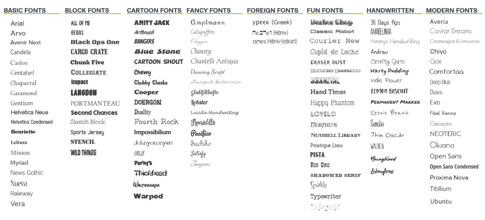
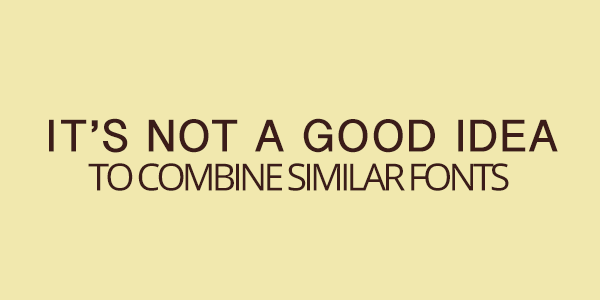
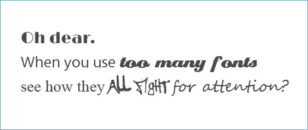
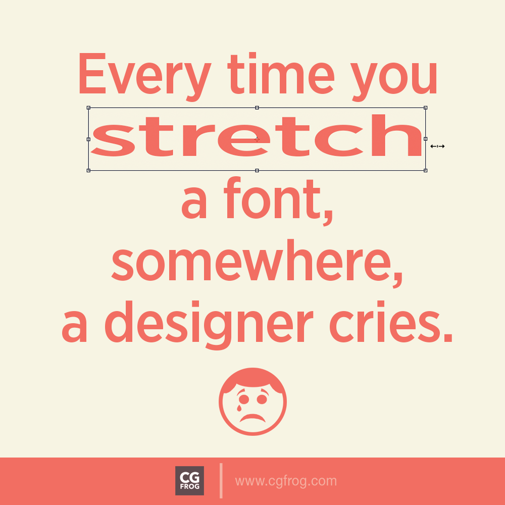
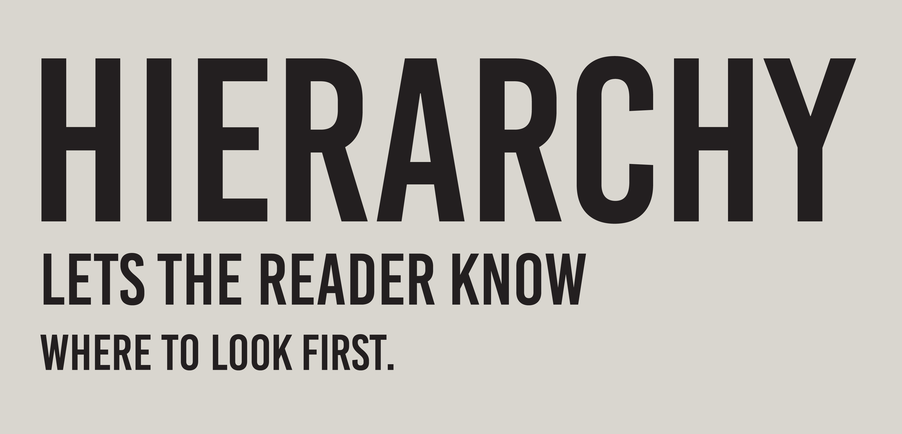
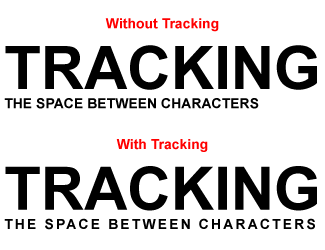

Czcionka i font – czy jest jakaś różnica?
Praca z czcionkami: 13 zasad typografii Poniżej prezentujemy 13 wskazówek, które pomogą ci lepiej pracować z czcionkami i dobierać je tak, by pasowały do siebie i tworzonych przez ciebie treści.
1. Pamiętaj, że każda czcionka ma swój charakter
Nie musisz zawsze stosować jednej, swojej ulubionej czcionki. Możesz ją zmieniać. W zależności od swojego nastawienia, humoru, który wyrażasz oraz treści komunikatu, który chcesz przekazać. Jeżeli nie zdecydujesz się na korzystanie z wielu czcionek – z całą pewnością przegapisz sporo z ich potencjału.
Oczywiście nigdy nie należy z tym przesadzać, albo nie mylić ich zastosowań. Jeżeli użyjemy czcionki, która ma wyglądać zabawnie, w kontekście poważnego biznesowego maila – to możemy wam zagwarantować, że obniży to waszą skuteczność i będzie wyglądało dziwnie. Z drugiej strony, jeżeli użyjecie taką czcionkę na opakowaniu produktu, który nie ma szczególnie poważnego przeznaczenia – wtedy będzie to wyglądało świetnie.

2. Nie mieszaj ze sobą podobnych czcionek
Warto użyć dwóch różnych czcionek – jeżeli mówimy o opakowaniach produktu. Jednej, bardziej odważnej dla przykucia uwagi oraz drugiej, poważniejszej i bardziej eleganckiej, aby dać tej pierwszej estetyczną oprawę oraz zrównoważyć całą kompozycję.
Ten zabieg jest całkiem prosty oraz efektowny, ale nie zadziała jeżeli użyjemy obok siebie dwóch, zbyt podobnych czcionek.

3. Nie używaj zbyt dużej ilości czcionek
Pamiętaj, że im mniej czcionek tym więcej harmonii. Oczywiście, idealna harmonia nie zawsze jest naszym celem. Czasami warto ją zaburzyć i wprowadzić pewną dozę ekscytującego chaosu. Jednak należy z tym uważać, aby nie przejść od odważnej kompozycji do kompletnej klapy.

4. Nie nadużywaj czcionek
Wrzucenie koło siebie 3-4 czcionek będzie się strasznie gryzło. W poprzednim punkcie chodzi o pewną ogólną zasadę tworzenia harmonii – jednak ten punkt dotyczy bardziej szczegółowych przypadków. Czasami może nam się wydawać, że za pomocą użycia wielu czcionek zwrócimy na coś uwagę etc. Jednak to nie prawda, sprawimy tylko, że całość będzie wyglądała dużo gorzej.
5. Pamiętaj, że potrzebujesz kontrastu
Odpowiednie używanie boldów, podkreśleń i tak dalej jest bardzo przydatne. Dzięki temu tekst staje się dużo bardziej czytelny i przejrzysty. Czytelnik często kiedy przegląda tekst to szuka fraz, które go w jakiś sposób zainteresują, a następnie czyta fragment tekstu w ich pobliżu. Jeżeli chcesz, aby odbiorca przeskanował tekst w taki sposób jaki Ty oczekujesz, wtedy odpowiednio zwróć uwagę na te fragmenty. Rzecz jasna uważaj, aby nie popaść w przesadę, cały efekt może negatywnie wpłynąć na czytelność tekstu.
6. Nie rozciągaj czcionki
Jeżeli pracujesz w programie graficznym i to w nim umieszczasz czcionki, to pamiętaj aby nigdy ich nie rozciągać. Wygląda to po prostu fatalnie. Bez żadnej głębszej refleksji. Tak po prostu jest, więc tego nie rób.

7. Nie przesadzaj z zachowawczością Możesz sobie pozwolić na to, żeby wyjść ze swojej strefy komfortu. Nie musisz używać tylko 2-3 najbardziej typowych czcionek, takich jak np. Helvetica. Owszem, czasami możesz z tego powodu popełnić pewien błąd, może coś nie wyjść, ale absolutnie się tym nie przejmuj. Jeżeli chcesz osiągnąć najlepsze rezultaty, to musisz popełniać błędy i ponosić porażki. To całkowicie naturalne.
8. Stwórz hierarchię
Najważniejsza część komunikatu powinna być odpowiednio wyróżniona, podkreślona mniej istotnym tekstem. Dzięki temu to co chcemy przekazać, będzie bardziej dosadne i skuteczne.

9. Odległości między literami
Zachowanie odpowiednich odległości pomiędzy literami jest bardzo ważne. Warto na to zwrócić uwagę, ponieważ dzięki temu możesz w znaczący sposób zwiększyć estetykę wszystkiego co piszesz. Co najważniejsze, wiele firm nie zwraca na to uwagi. Źle zachowane odległości pomiędzy literami to bardzo częsty błąd, który możesz wykorzystać na swoją korzyść.

10. Wyrównanie Wyrównanie tekstu, do którejś ze stron to bardzo ważny aspekt jeżeli chodzi o całą harmonię naszego tekstu. Warto pamiętać o tym, że wyśrodkowanie tekstu nie jest najlepszym, idealnym pomysłem. Taki tekst czyta się zwyczajnie źle. Dlaczego zwracamy na to uwagę? Wiele osób lubi wyśrodkowywać tekst, wydaje im się, że będzie on dzięki temu dużo bardziej czytelny. Otóż nie – nie będzie. W praktyce, taki tekst jest jednym z najmniej możliwych wygodnych do przeczytania. Pamiętaj, że często stoisz przed pewnym dylematem – pomiędzy czytelnością danego tekstu, a jego estetyką. Nie zawsze te dwie kwestie się wzajemnie wykluczają, jednak czasami tak jest. W takich przypadkach należy dążyć do odpowiednio zbalansowania.
11. Odpowiednio dobieraj rozmiar czcionki
Rozmiar ma znaczenie. Dobry wybór wielkości czcionki jest bardzo istotną kwestią. W ten sposób możemy poukładać tekst, sprawić, że ma on ręce i nogi – zwyczajnie czyta się go wygodniej. W dużej mierze działa to w podobny sposób jak wspomniany wcześniej kontrast.

12. Szukaj dobrych inspiracji Pamiętaj, żeby być otwartym na różne eksperymenty. Szukaj inspiracji tam, gdzie ciekawe czcionki sprawdziły się świetnie. Analizuj ich kompozycję. Tylko w ten sposób będziesz w stanie być lepszy niż dotąd.
13. Dobór koloru Kolory są bardzo ważne. Całkowicie szczerze – zwykle najlepszym wyborem jest po prostu czerń korespondująca z bielą i tyle. Bez żadnych super oryginalnych pomysłów. Nie zawsze tak jest, ale zwykle. Dlatego, jeżeli nie masz wielkiego doświadczenia – to jeżeli chcesz mieć pewność co do tego, że będzie co najmniej nieźle, to staraj się używać tego prostego połączenia. Kiedy już opanujesz podstawy, dopiero wtedy zacznij eksperymentować z innymi kolorami.